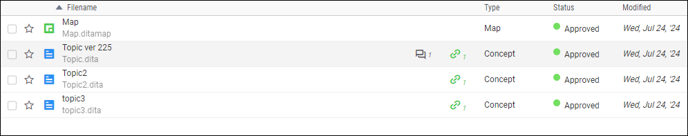
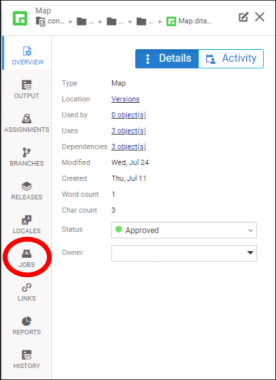
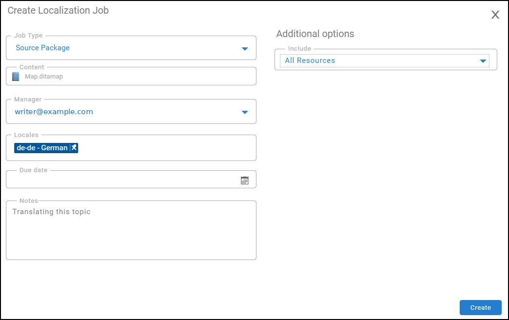
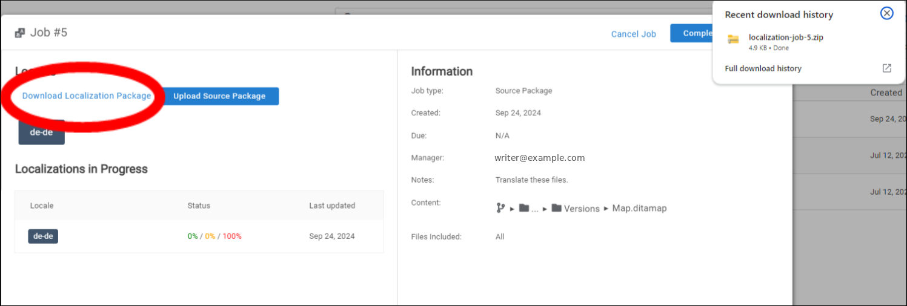
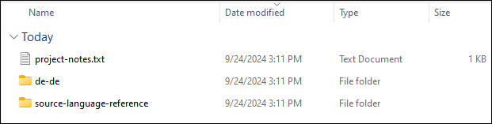
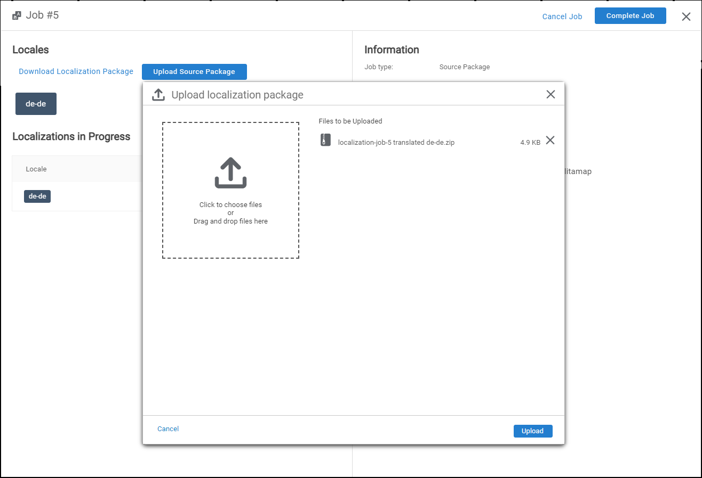
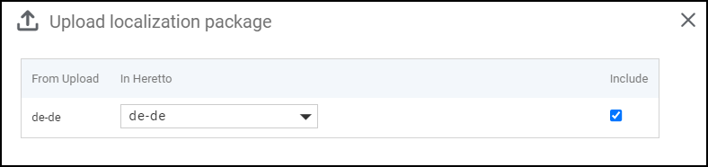

Creating a localization job
You can manage and translate your content for different languages and regions with localization jobs.
Start by creating maps to handle translations. A map is your starting point for any translation project. It groups the content to be translated. From these maps, you can create localization jobs. In the Jobs tab, you create translation packages.
Download the translation package and send it to your translation team.
-
Prepare the content for translation.
- Organize all the content to be translated into a map.
Note: This map is the container for the topics you need to translate.
- Verify that the map includes all needed topics and that the content is ready for translation.

- Organize all the content to be translated into a map.
-
Create a localization job.
- Click the Map and select Jobs.

- Click the Create Localization Job button and select the Source Package or XLIFF job type.
- Select the target language. Optionally, set a due date and include any notes relevant to the translation job.
- Click the Create button.

-
Download and send the localization package.
- Click the job and click Download Localization Package.

- Review the package contents to confirm it includes the correct files for translation. There should be two files: the new language and the source language reference.

- Send the zip package to your translation team. Instruct the team to translate the content without changing the file structure or names. Only change the text inside the elements, not the XML structure.
-
Receive and upload the translated content.
- After the translation is complete, receive the translated package from your team.
- Upload the package back into Heretto.

- Confirm that the two language codes match. Select Include and click Apply.

- Heretto automatically associates the translated content with the source files.
-
Review and publish the translated content.
- Review the uploaded translations to confirm accuracy and completeness.
- Click the Complete Job button.